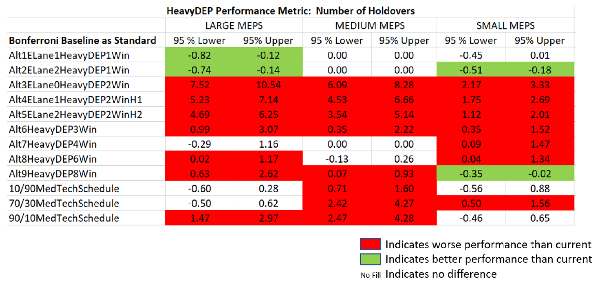
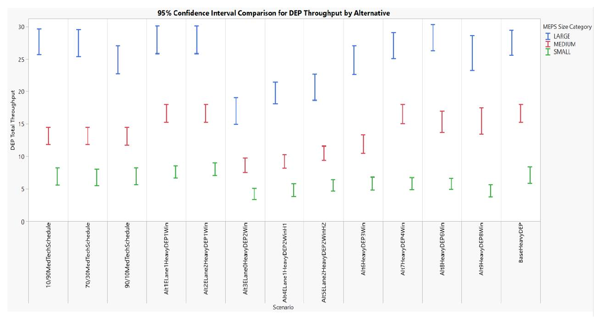

- 最後の到着枠は 9 時まで予約枠の最後が 9 時より後になる案では、持ち越しが増え、処理できる人数が減った。今の運用のままでは、9 時以降の到着を受ける予約制は成り立たないと著者は述べる。
- 分割シフトで持ち越しが 7.5〜10.5 人増大規模の検査所で 6 時と 11 時に分けると、持ち越しは現状より 7.52〜10.54 人多く、DEP の志願者の処理数は平均 8〜12 人少なかった（95% 信頼区間、論文 Table 4.3 と §4.6）。
- 優先レーンは待ち時間を 64〜78 分短縮一括到着のまま 25% の DEP の志願者に説明を飛ばさせると、大規模の検査所で DEP の待ち時間が 64〜78 分短くなり、持ち越しは現状と同じかそれ以下だった（§4.10、Table 4.3）。
入隊検査所は志願者を朝にまとめて受け入れて待ち時間が長く、代わりの方法を評価するモデルがなかった
米軍の入隊処理司令部（USMEPCOM）は、全国 65 か所の入隊検査所（MEPS）で、適性検査、健康診断、入隊の手続きを行う。志願者は 1 日の始めに 1 つの集団で到着し、いくつもの窓口を順に回る。この方法は機能しているが、志願者の待ち時間が長い。分割シフトや予約制などの代案は話し合われてきたが、試行の段階から先に進んでいない。理由の 1 つは、案が業務にどう影響するかを評価できる、検査所の流れ全体のモデルがなかったことである。過去の検査所のシミュレーション（Feo ら 1992、Maurina と Chakravarthy 2015）は、今の運用の意思決定に使える形ではなかった。
修士論文はどの検査所の規模にも使える汎用の意思決定支援モデルを作り、受付方法の代案を比べることを目的とする。DEP（入隊を約束して後日に基礎訓練へ行く志願者）と Ship（手続きを終えるとそのまま基礎訓練へ向かう志願者）を中心に、1 日の処理をシミュレーションする。
6 時に始まり 16 時 30 分に終わる 1 日を再現し、終わらなかった志願者を持ち越しとして数える
モデルは Simio で作った離散事象シミュレーションで、小・中・大の 3 つの規模の検査所を表せる。処理は 6 時に始まり、16 時 30 分の時点で終わっていない志願者は「持ち越し（holdover）」として列から外し、数える（入隊業務の連絡官の窓口だけは 16 時 45 分）。持ち越した志願者は別の日にもう一度来なければならない。
- 3 つの部門：適性検査、健康診断、業務（各軍の連絡官を含む）。健康診断は性別や志願者の種類で流れが分かれ、いくつかの作業は集団でまとめて行う。
- 志願者の種類と優先度：Ship（優先度 1）、当日処理（2）、特定日の志願者（3）、DEP（4）、夜間の適性検査（5）。数の小さいほうが窓口で先に処理される。DEP と Ship は 6 時に一括で生成する。
- データ：USMEPCOM の情報システム USMIRS の 2019 年度（2018 年 10 月〜2019 年 9 月）の 4,724,647 件の記録。各部門の出入りの時刻はあるが、部門内の個々の作業の時間はない。よく知られた分布は当てはまりが悪く（たとえば Weibull 分布のカイ二乗検定で p = 0.005）、経験分布を使った。部門内の作業は人員計画のモデルと海軍大学院の修士論文（Linton 2021）の値で補った。
- 仮定：週 5 日の通常の業務時間で、無断キャンセル（予定の志願者が来ないこと）は 0 とする。昼休みは待ち時間の中に含まれるとみなす。
- 検証：DEP や Ship が最も多かった日（MAXDEP、MAXShip）を USMEPCOM の実績と比べた。中規模の検査所の MAXDEP では、モデルの滞在時間は実績より DEP で 5〜22 分、Ship で 3〜5 分短かったが、10 時間の処理日の中では小さい差として、モデルは妥当と判断された。乱数は 120 本の系列に分けた共通乱数法で、案どうしの比較の誤差を抑えた。
DEP の志願者の到着のさせ方を、1 回・2 回・3〜8 回の予約枠と優先レーンの組み合わせで変える
Ship の志願者の数と到着は変えず、DEP の到着の回数と間隔だけを変える。DEP が多い日（HeavyDEP）と Ship が多い日（HeavyShip）のそれぞれで、1 日の処理を比べた。予約枠は Gupta と Denton（2008）のブロック予約の考え方で組んだ。
| 案 | DEP の到着 | 枠の間隔 | 大規模の HeavyDEP の到着数（DEP, Ship） |
|---|---|---|---|
| 現状 | 1 回（6 時） | — | (40, 8) |
| 優先レーン 1・2（Alt1、Alt2） | 1 回 | — | (30, 8)＋優先レーン 10 |
| 分割シフト（Alt3） | 2 回（6 時、11 時） | 300 分 | 1 回あたり (20, 8) |
| 分割シフト＋優先レーン（Alt4、Alt5） | 2 回 | 300 分 | (15, 8)＋優先レーン 5 |
| 予約制 3 枠（Alt6） | 3 回 | 120 分 | (13, 8) |
| 予約制 4 枠（Alt7） | 4 回 | 60 分 | (10, 8) |
| 予約制 6 枠（Alt8） | 6 回 | 45 分 | (7, 8) |
| 予約制 8 枠（Alt9） | 8 回 | 平均 30 分の指数分布 | (5, 8) |
表1 比べた案（論文 Appendix C と Appendix F）。予約制の到着数は 1 枠あたりの人数。ほかに、医療技術者の午前と午後の配置を 10/90、70/30、90/10 に変える 3 案もある（基準は 50/50）。
- 優先レーン：DEP の志願者の 25% を優先レーンの志願者とし、優先レーン 1 は司令官の説明を、優先レーン 2 は司令官の説明と健康診断の説明の両方を飛ばして、健康診断へ直接進ませる。USMEPCOM が 2018 年に提案した優先レーンの取り組み（HDHC ELANE）をまねた案である。
- 最後の枠の時刻：分割シフトの 2 回目は 11 時、予約制の最後の枠は 3 枠で 10 時、4 枠で 9 時、6 枠で 9 時 45 分、8 枠で 9 時 30 分になる。
- 比較の方法：各案を 15 回反復して始め、すべての指標で相対誤差が 5% になるまで反復を足した。現状を基準に、Bonferroni 法の 95% 同時信頼区間で比べる。指標は持ち越しの数、処理人数、滞在時間、健康診断部門での時間、待ち時間、職員の稼働率など。
分けて到着させると待ち時間は減るが、9 時より後に来る志願者が終わらずに持ち越しが増え、処理人数も減った

- 持ち越し：2 回に分ける案（Alt3〜Alt5）は、すべての規模で持ち越しが大きく増えた。分割シフトでは現状より大規模で 7.52〜10.54 人、中規模で 6.09〜8.28 人、小規模で 2.17〜3.33 人多い。分割シフトに優先レーンを加えても、平均で 1〜3 人多く持ち越す。一括到着の優先レーン（Alt1、Alt2）は、大規模で持ち越しが減り、中・小規模では現状と差がないか少ない。
- 9 時のしきい値：最後の枠が 10 時の 3 枠の予約制は、すべての規模で持ち越しが増えた。著者は、今の運用では 9 時より後の到着を受ける予約制は、持ち越しの大幅な増加なしには支えられないと結論する。
- 処理人数：Ship の処理人数はどの案でも変わらなかった。DEP の処理人数は 2 回に分けると大規模で平均 8〜12 人、中規模で 7〜8 人、小規模で 2〜3 人減った。4・6・8 枠の予約制は大・中規模では現状と差がなく、小規模で平均 1〜2 人減った。

- 滞在時間と待ち時間：DEP が多い日には、どの案も DEP の滞在時間と待ち時間を減らした。ただし分割シフトや予約制で減ったのは、遅く来た志願者が 16 時 30 分に外されるためで、見かけの改善だと著者は注意する。持ち越しの増えない一括到着の優先レーンでは、DEP の待ち時間が大規模で 64〜78 分、中規模で 45〜60 分、小規模で 90〜107 分短くなった。滞在時間の短縮は優先レーン 1 で大規模 35〜64 分、優先レーン 2 ではすべての規模で 1 時間を超えた。
- Ship が多い日：予約制では、DEP の健康診断部門での時間が現状より 10.5〜43 分長くなり、中規模の 3 枠と 4 枠の予約制では DEP の待ち時間が 23〜41 分、18〜36 分増えた。
- 職員の稼働率：予約制は大・中規模で職員の稼働率を上げる。2 回に分ける案では、医師の稼働率が中規模で 1〜4%、小規模で 9〜13% 下がった。5 時間あく到着の間に、医師の前の列がなくなるためである。
著者の結論は、一括到着を続けることが最もリスクが小さく最良の選択肢である、というものである。処理人数を最大にする点で現状を上回る案はなく、Ship が多い日には持ち越しを最も少なくするのも現状だった。優先レーンは実行可能で、DEP の志願者が多い日に勧められる。分割シフトと 3〜8 枠の予約制は今の運用のままでは勧めない。導入するなら、9 時のしきい値を設けても、運用の調整が必要になるとしている。
Lian らの予約表の断片化を文献の章で取り上げるが、実験では使わず、到着の枠の数と時刻を比べる研究である
- Lian ら（2010）の扱い：文献の章（§2.3）で 1 段落を割いて紹介する。予約表に細切れの空きがあると新しい受付を入れにくく、職員の稼働率も下がる。検査所が予約制にして予約表が断片化すれば、飛び込みの志願者を受けられない恐れがある。著者は、Lian らの研究が予約枠を割り当てて断片化を減らすための「手引き」になると書く。さらに、断片化の解消は飛び込みやオンライン予約を受け、予約の長さがいろいろな診療所で最も役立つという Lian らの結論を引き、飛び込みの志願者がいて、種類と性別で処理時間が違う検査所も「理論上は」恩恵を受けうると述べる。USMEPCOM の優先レーンの手順書が取り入れた文献の 1 つとしても名前を挙げる。ただし、シミュレーションの案には断片化の解消を入れておらず、予約枠は Gupta と Denton のブロック予約で組んでいる。Lian ら（2010）の解説も参照。
- 美容室の予約との対応：決めるのは 1 日の到着をいくつの枠に分け、最後の枠を何時にするかで、個々の予約をどの空きに入れるかではない。それでも、閉店時刻（ここでは 16 時 30 分）から逆算して、最後の受付をいつまでにするかで終わらない客が増える、という結果は、施術時間の長い予約を営業時間の終わりに入れられるかという問題と同じ形をしている。
- 使えるところ：待ち時間だけを指標にすると、遅く来た人が外されることで改善したように見えるという注意は、受入率の指標を設計するときにも当てはまる。待ち時間や滞在時間と、断った数（持ち越し）や処理人数を一緒に見る必要がある。
@mastersthesis{escamilla2022decision,
title = {A Decision Support Simulation to Analyze Scheduling Alternatives for Applicant Processing at Military Entrance Processing Stations ({MEPS})},
author = {Escamilla, Jonathan M.},
school = {Air Force Institute of Technology},
year = {2022},
month = mar,
number = {AFIT-ENS-MS-22-M-124},
url = {https://scholar.afit.edu/etd/5339}
}
ページの内容と数値は、AFIT Scholar で公開されている修士論文の PDF（AFIT-ENS-MS-22-M-124、2022 年 3 月）の本文による。図 1 と図 2 は同じ PDF から切り出した。同じ研究をまとめた学術誌版（LaCasse, Champagne, Escamilla, Journal of Defense Modeling and Simulation 21(2), 2024、DOI 10.1177/15485129221134536）は要旨だけを読んだ。学術誌版の要旨は予約制の結果を「まちまち」と書くが、修士論文の結論は予約制を勧めないとしている。